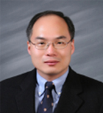

PROFESSOR

Prof. Jin-Kyun Lee
Address
INHA UNIVERSITY, 100 inharo, Michuhol-gu, Incheon 22212, Korea
E-mail
jkl36@inha.ac.kr
Tel
032-860-7481 (office), 032-860-8769 (lab)
Education
2002.1 – 2005.10
University of Cambridge, Clare College, UK
- Ph.D. Department of Chemistry
- Thesis: Application of supercritical CO2 to organic synthesis as an environmentally benign reaction medium (Palladium catalysis and phase transfer catalysis)
- Studentship awarded by AstraZeneca (UK), Overseas Research Students Awards Scheme (UK), Cambridge Overseas Trust (UK)
- Supervised by Prof. Andrew B. Holmes
- 2004. 12-2005. 10, conducted Ph.D research in the University of Melbourne as a visiting student with Prof. Andrew B. Holmes
1996.3 – 1998.2
Seoul National University, South Korea
- MSc. Department of fiber and polymer science (supervised by Prof. Soo Young Park)
- Thesis: Structure control of side-chain fluorescent polymers and its effect on electroluminescent properties
1991.3 – 1996.2
Seoul National University, South Korea
- BSc. Department of fiber and polymer science
- Graduated with the highest GPA among 41 students (Summa cum laude)
Experience
2010.3 – present
Inha University, South Korea
- Associate Professor, Polymer Science & Engineering
- Research topics:
- Functional fluorinated polymers for organic integrated circuits
- Molecular and polymeric materials for energy conversion
- Soluble inorganic materials upgraded with performance organic ligands
- Currently giving lectures on Organic and Polymer Synthesis
2008.10 – 2010.2
Cornell University, USA
- Research associate, Materials Science & Engineering
- Research topics:
- Orthogonal Processing: synthesis and application of fluorinated functional materials processable in fluorinated solvents and supercritical carbon dioxide
- High resolution photolithography: synthesis and characterisation of small molecular photoresist materials for extreme UV and 193 nm light source
- Collaboration with Prof. Christopher K. Ober and Prof. George Malliaras
2005.11 – 2008.9
Cornell University, USA
- Postdoctoral associate, Materials Science & Engineering
- Collaboration with Prof. Christopher K. Ober
1998.1 – 2001.12
SK Energy, South Korea
- Research scientist
- Development of commercial processes for the production of fine chemicals and pharmaceuticals (custom synthesis division)
Presentation
2016. 05. 19 – 20
“High Mobility Semiconducting Polymers Composed of All Electron-Accepting Monomer Units” ICME & D 2016
2015. 08. 23 – 28
“Fluoros Materials Chemistry for Greater Progress of Organic Electronics” 21st ISFC & ISoFT’15
Honors (Awards)
2009
Best Poster Award ( 2nd International Symposium on Flexible Organic Electronics, Halkidiki, Greece)
2009
Best Poster Award ( Materials Research Society Spring meeting, San Francisco, USA)